Seiga [清雅] Three Generations of Pure Elegance
The Work of Living National Treasure Kenji Suda [須田賢司]
Presented by: Michael Raba for AS 390

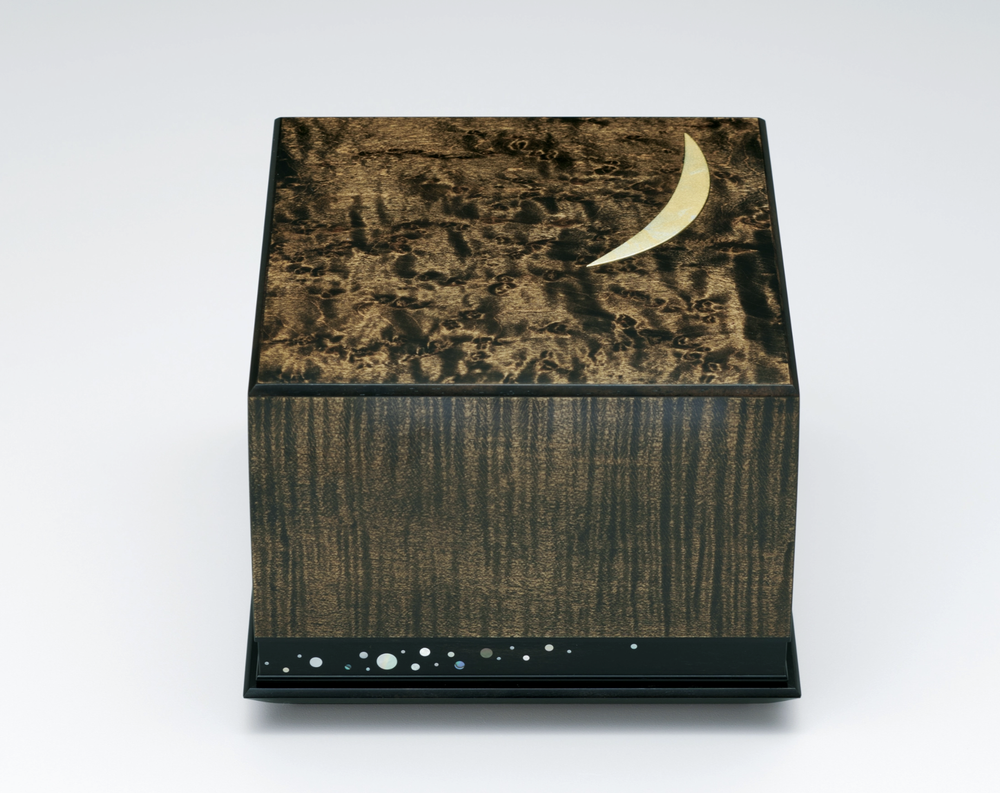
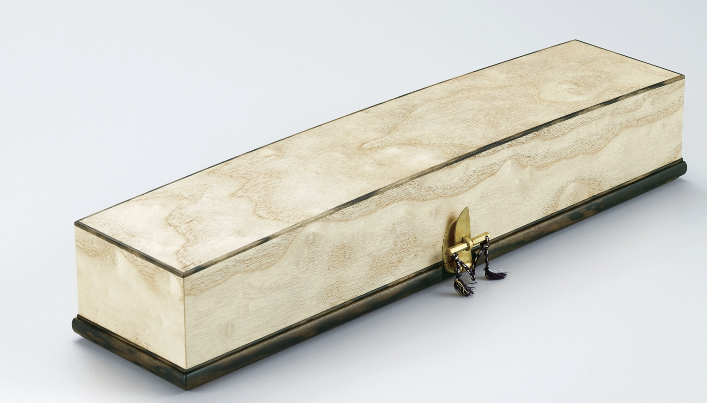
Kenji Suda: The Living National Treasure (Japan)
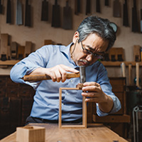
- Apprenticeship: Trained in the rigorous "Standard" of Sashimono joinery under his father, Suda Sousui (1910-1979).
- Shrine Carpentry: Studied the structural principles of Miya-daiku (shrine carpentry) through the legacy of his grandfather, Suda Kiichi (1877-1950).
- Urushi Artistry: Refined his lacquer techniques by studying with his maternal grandfather, incorporating traditional Urushi finishes into his woodwork.
Detail
| Generation | Name (Birth/Art) | Kanji | Lifespan | English Meaning / Role |
|---|---|---|---|---|
| 1st | Suda Kiichi | 須田 喜一 | Late Meiji | Founder of the Tokyo Lineage |
| 2nd | Suda Sōgetsu | 須田 桑月 | 1877–1950 | “Mulberry Moon” (Master of Kuwa) |
| 3rd | Suda Sōsui | 須田 桑翠 | 1910–1979 | “Mulberry Kingfisher” (Kenji’s Teacher) |
| 4th | Suda Kenji | 須田 賢司 | 1954–Pres. | “Wise Admin” (Living National Treasure) |
Kenji in workshop
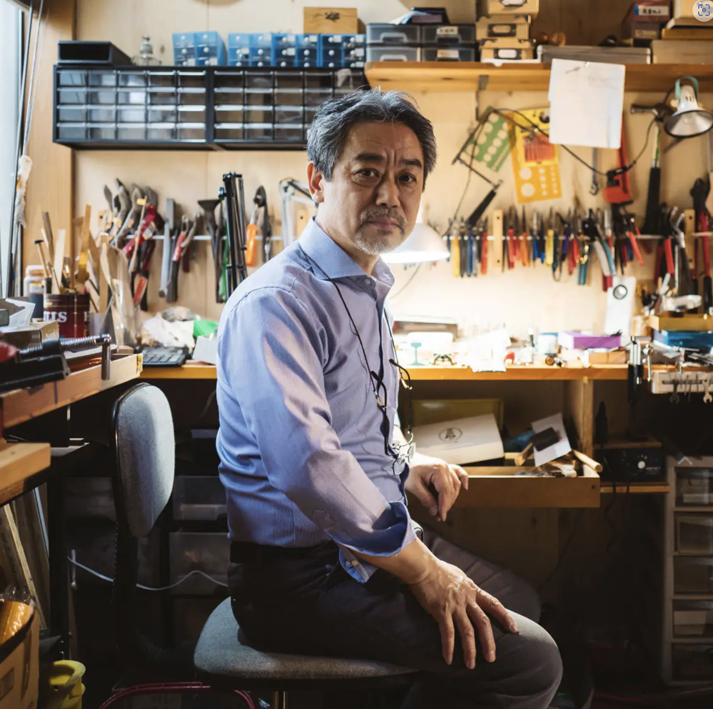
Style/Technique
- use of local kiln dried woods (mulberry)
- unites: blacksmithing, joinery, and lacquer (fuku-urshi)
blind (hidden) joinery

lacquered detail closeup

Hand joinery

Chisel work for precise fit
Suda Sogetsu (1877-1950)
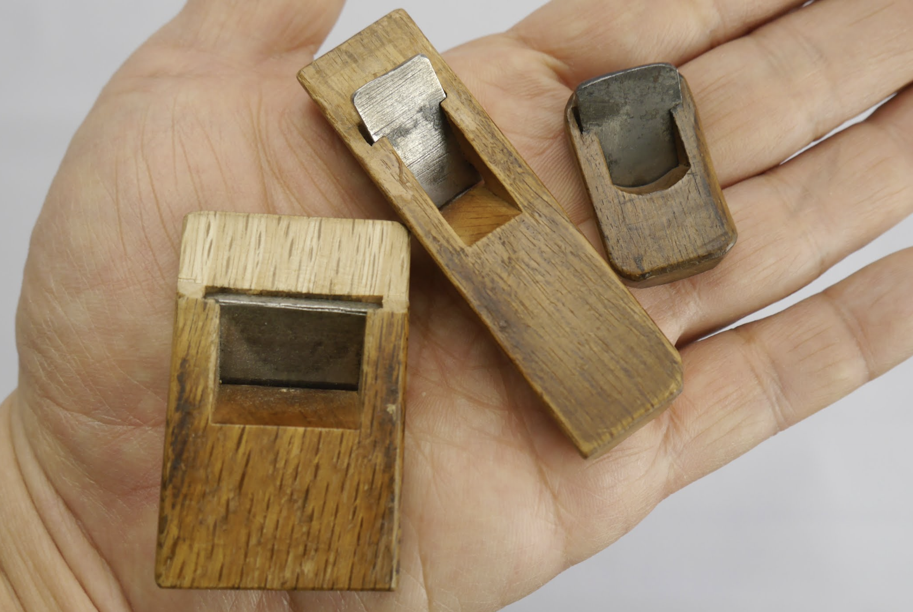
The small planes in the hand of Kenji
Detail
The small planes in the hand of Kenji
Blades are said to be the works of famous bladesmith Nobuyoshi. Kenji wrote that, “There is nothing more to say except that they cut well.” The well-used tools have a particular beauty.
Grandfather’s Box
Mulberry writing box Creator: Suda Sogetsu (1877-1950)
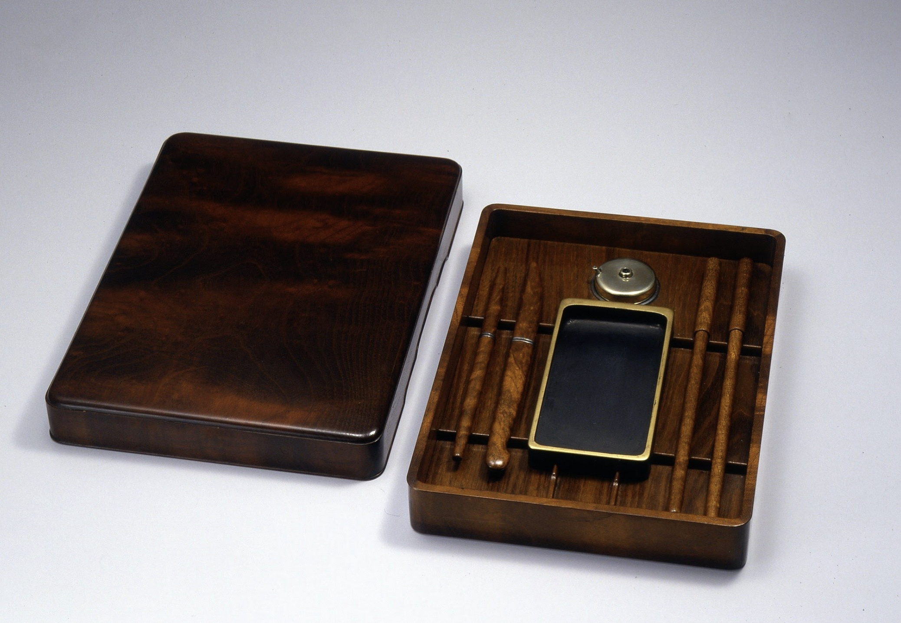
Detail
credited with elevating the family’s technical standards to the elite levels required for Imperial-grade furnishings.
- Imperial Household Agency : functional, ultra-high-end furnishings meant for the environments where the Imperial family lived or held audiences.
Father’s Box
Suda Kuwasui “Black Persimmon Chest of Drawers” 1979
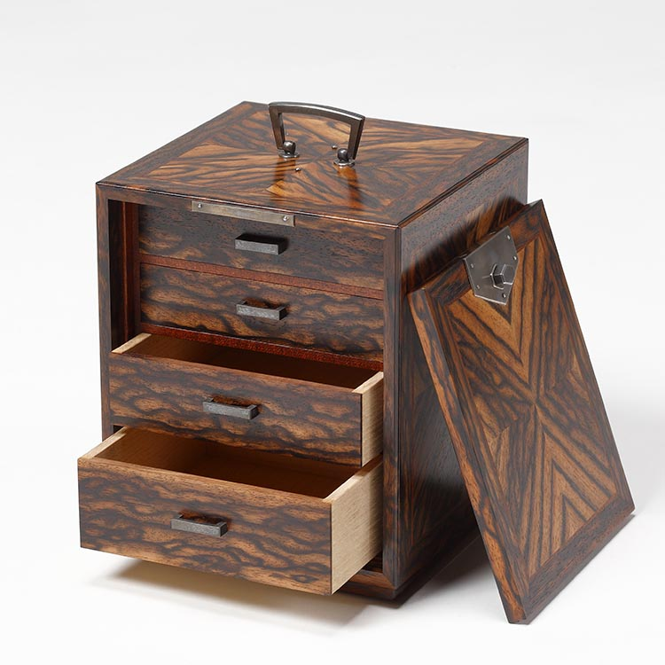
Detail
- clean lines, structural balance, and the functional beauty of the Sashimono joints.
- National Art Exhibitions
Historical First

‘Small Cabinet’, made by KAJITA Megumu
Detail
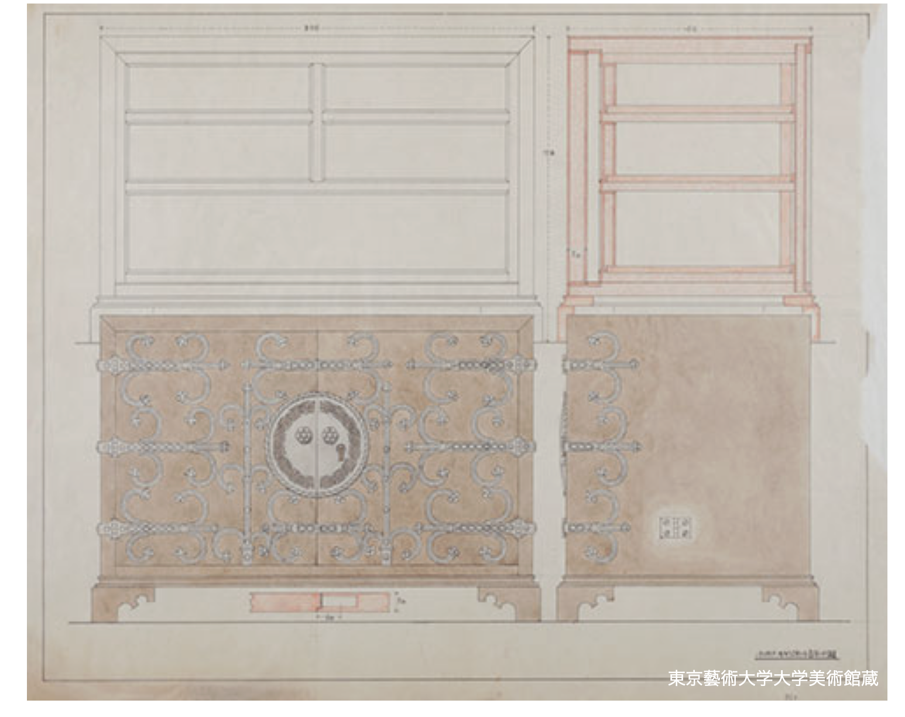
- Detailed plans with dimensions for a small cabinet
- Kajita Megumu (梶田惠作). Kajita was a seminal figure in modern Japanese woodworking and a primary influence on the transition from traditional guild-based “copying” to the systematic, architectural design that Suda Kenji practices today.
Detail
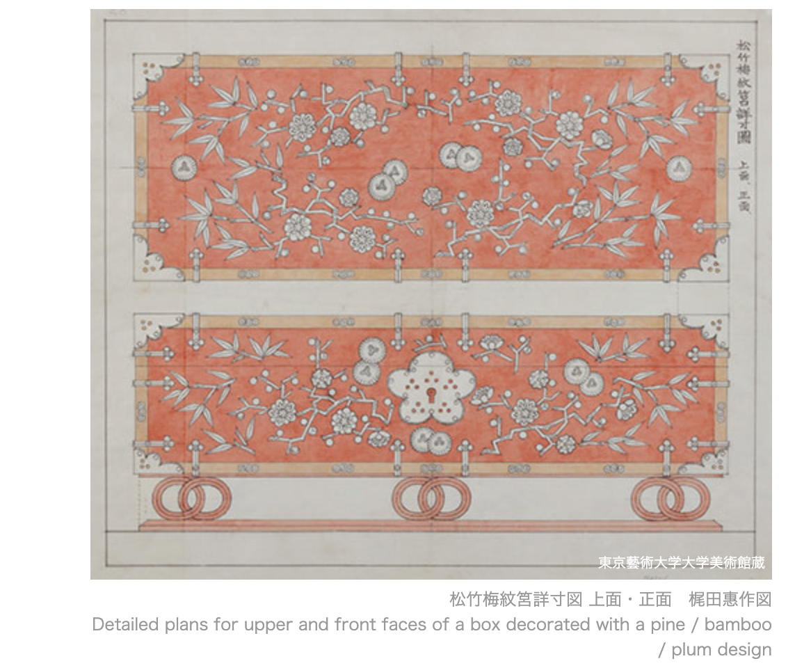
- Kajita Megumu was a professor at the Tokyo University of the Arts and was instrumental in teaching the “academic” side of woodworking. The Suda family (starting with Sogetsu and Sosui) moved in these high-level circles where the drawing (the blueprint) became as important as the chiseling. (Source: https://www.a-quad.jp/exhibition/097/p07.html)
Sun and Moon (2023)
Details
- wiped lacquer finish
- H 10.5 x W 13.8 x D 13.8 cm
- Maple and Bamboo
Auspicious Cloud Over Paulownia Flower (2018)
Detail
- Paulownia wood
- 7.2 x W 9.5 x D 40.0 cm (narrower but twice as long as a loaf of store bread)
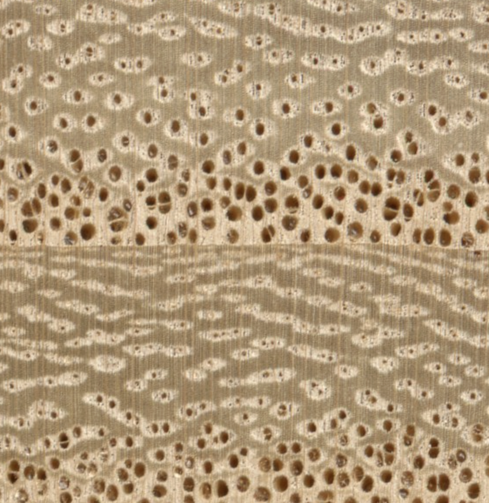
Figure 1: endgrain of Paulownia wood (source: wood-database.com)
A Tale of Two Cities (2012)
Japanese Traditional Art on Gallery Japan
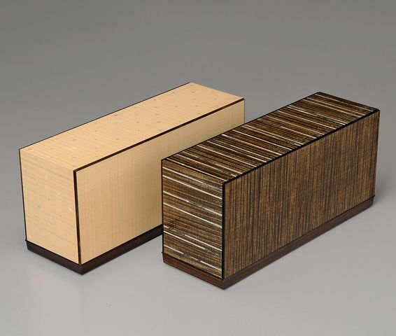
Detail
Maple and Shell create a more “urban” and “global” aesthetic. Sharp clean lines and the high-contrast grain between the two boxes
- Primary Woods: Maple (楓 - Kaede), Jilicote, and Granadilla.
- Inlay Materials: White Mother-of-Pearl and Paua Shell.
- Finish: Fuki-urushi (wiped lacquer), highlights natural grain
Small Box of Zelkova Finished in Wiped Urushi (2022).
Analysis
- The 62th East Japan Traditional Kōgei Exhibition (2022)
- Zelkova is famous for its bold, “mountains and rivers” grain. In this piece, Suda has selected a cut where the grain lines are broad and stable.
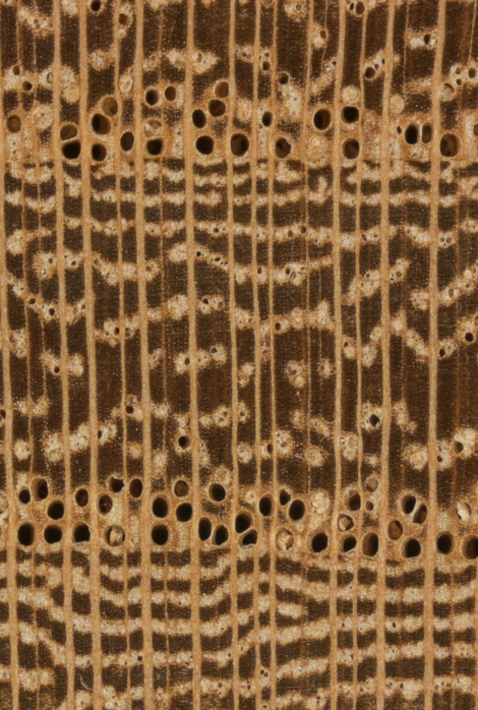
Figure 2: endgrain of zelkova (source: wood-database.com)
Seal Box in Parquetry Walnut, “Shibien” (1997)
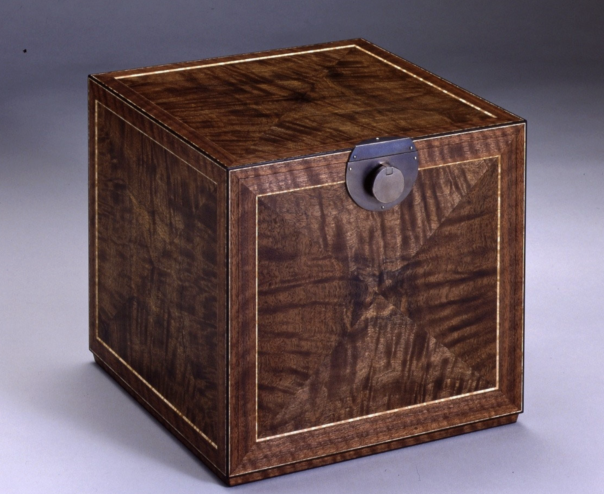
Detail (1997)
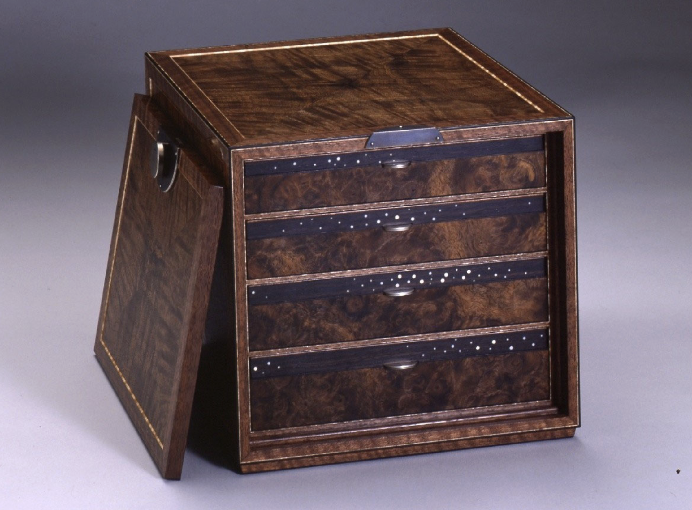
Suda’s Explanation
“I am surprised that it has been 28 years since I made this work, and at the same time, I remember the time of production as if it were yesterday. Walnuts are special walnuts from the United States called ”Claro Walnut“. The rooting part of a large timber with a diameter of nearly 1 meter is made of four pieces of parquet in a diagonal line to make up each side. It has a slightly purplish brown color, which is suitable for the general term for stars centered on the North Star. It is a pity that the door is closed and you cannot see the inside , but the four-tier drawer is included.”"
Ohotera: Table of Pear and Locust (2024)
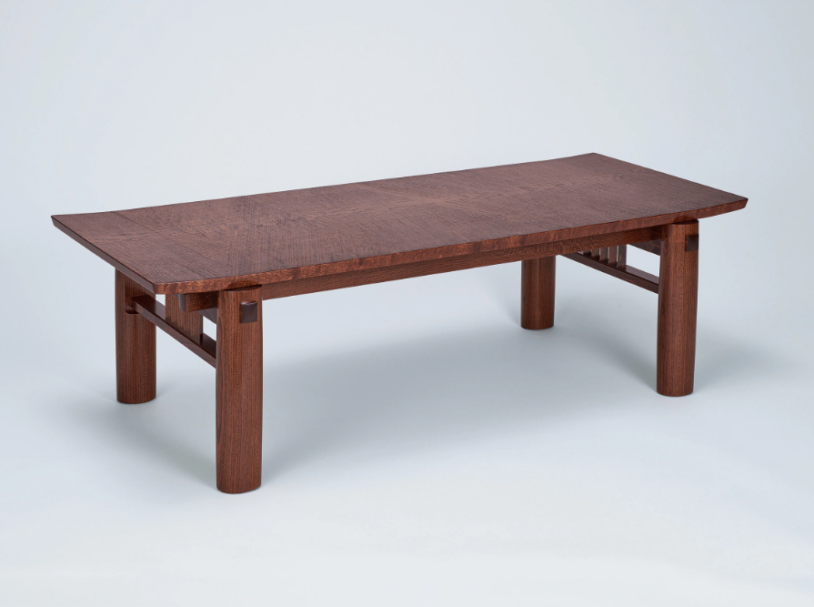
- Artist: Kenji Suda [須田賢司]
- Status: Living National Treasure
- Typology: Functional Furniture / Wood Art
- Dimensions: H 32.0 × W 114.0 × D 46.0 cm
- Value: ¥1M - 6M ($6.5k - $40k USD)
Concept, Structure & Materiality
- Concept: Organizing rectilinear planes with a “Seiga” (refined purity) motif. The formal elements emphasize horizontal massing, where the “S-curve” of the leg-to-apron transition creates a fluid line from the ground to the surface.
- Structure: A codependent structural system. The table utilizes traditional Sashimono (blind joinery) to handle the tension of the cantilevered top. The relationship between the low height (32cm) and the wide span (114cm) requires high-precision compression joints to prevent racking without metal hardware.
- Materials: Deploys Kenponashi (Japanese Raisin Tree/Pear) for its refined grain and Enju (Japanese Pagoda/Locust) for structural density. These choices balance the aesthetic need for “shimmer” with the functional requirement of a load-bearing surface.
Process, Details & Context
- Process: Fabricated using 2,000-year-old assembly methods, planed by hand to achieve a "wiped" finish that highlights the grain. The process itself is the aesthetic; every joint interface is a visible testament to mastery.
- Context: Designed for high-end residential or traditional Washitsu (Japanese room) environments. Targets elite collectors/museums, justified by Suda's status and the "complete" technical mastery required for glue-less joinery.
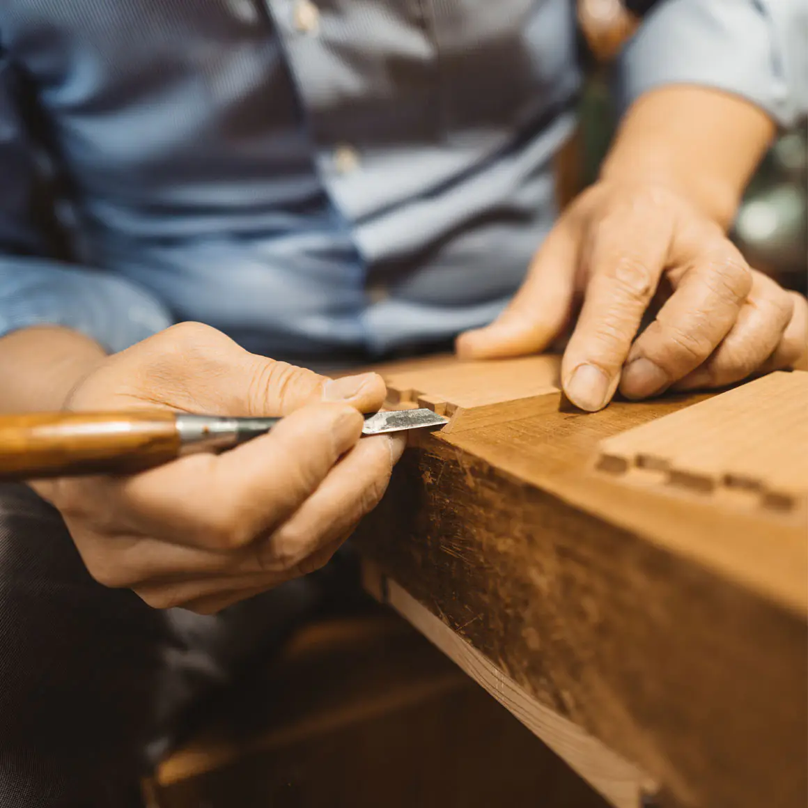
Sycamore Maple Box (2019)

- Artisan: Carpenter (Sashimono Specialist)
- Material: Curly Maple (Sycamore)
- Exhibition: 66th Japan Traditional Crafts (2019)
Concept, Structure & Materiality
- Concept: Formal organization of rectilinear planes and rhythmic repetition; grain “chatoyancy” contrasts with dark vertical massing.
- Structure: Codependent Sashimono (blind joinery) system; relies on precision-fit compression and mechanical locking without fasteners.
- Materials: Curly Maple selected for aesthetic shimmer and high structural density; technology of the hand expressed through grain-matching.
Process, Details & Context
- Process: Sequential interlocking of tsugite joints; fabrication is elevated to an aesthetic by exposing joinery as a serrated decorative element.
- Details: Large maple chassis; Medium rhythmic joinery “teeth”; Small metal pins and circular surface inlays.
- Context: Functional sculpture for institutional/collector environments; labor-intensive fabrication justifies high-end retail price point.
Yatsuhashi II: Claro Walnut and Cherry Wood Table
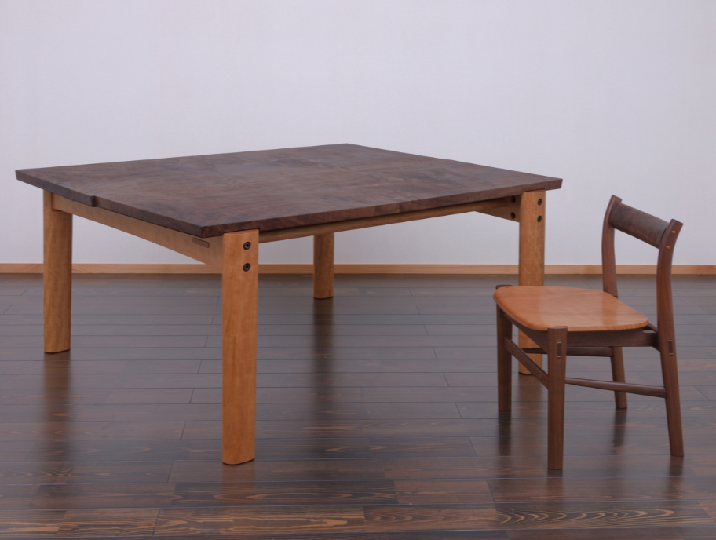
- Artisan: Kenji Suda (Living National Treasure)
- Material: Claro Walnut and Cherry Wood
- Dimensions: H 72.0 x W 160.0 x D 135.0 cm
Concept, Structure & Materiality

- Concept: Formal organization of rectilinear planes and rhythmic repetition; grain "chatoyancy" contrasts with dark vertical massing.
- Structure: Codependent Sashimono (blind joinery) system; relies on precision-fit compression and mechanical locking without fasteners.
- Materials: Curly Maple selected for aesthetic shimmer and high structural density; technology of the hand expressed through grain-matching.
Process, Details & Context
- Process: Fabricated using high-precision Sashimono (wood joinery) and finished in wiped lacquer (urushi) to accentuate the grain without masking the tactile surface.
- Details: Large interlocking walnut planks; Medium cherry structural beams; Small precisely carved joint interfaces where the “planks” meet the frame.
- Context: A monumental functional sculpture intended for institutional or high-end residential interiors; its status as a work by a Living National Treasure places it in a high-luxury price bracket for serious collectors.
Analysis Work: (double box)
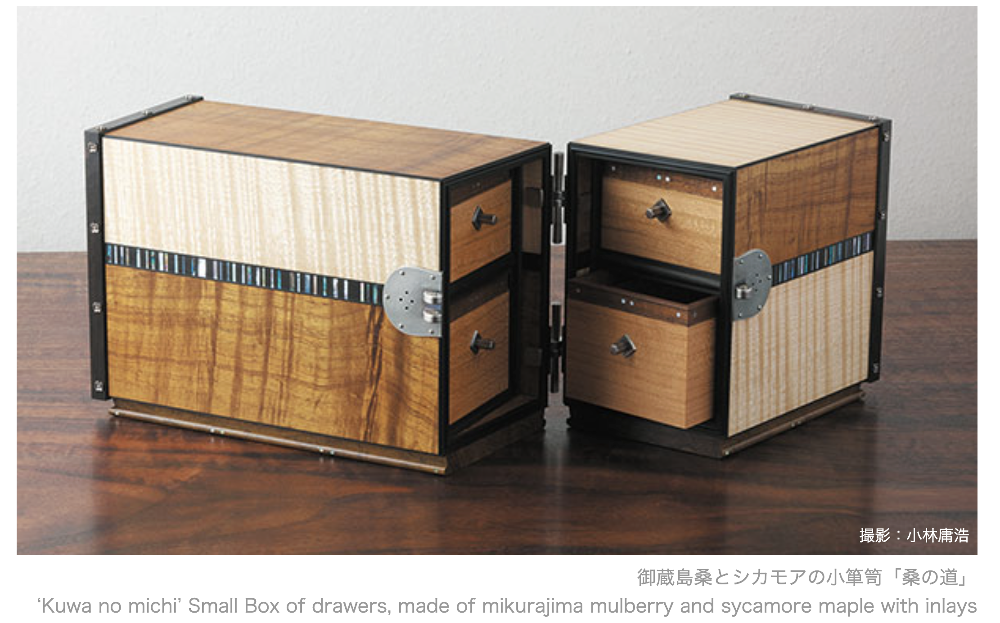
Opening display view

Detail

Rikuri (2008)
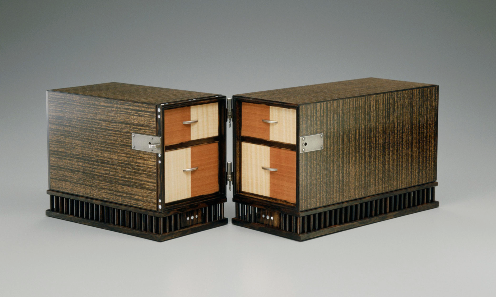
Detail
- Rikuri is a poetic, somewhat archaic term meaning “Dazzling,” “Glittering,” or “Resplendent.” It often describes something with a multi-colored or shimmering brilliance (like light hitting the maple grain through the lacquer).
- 所蔵：宮内庁 (Shozō: Kunaichō): Collection: Imperial Household Agency. The piece was acquired by or gifted to the Japanese Imperial Family and is part of their official collection.
Philosophy: Craft as Life [生活 - Seikatsu]
- Beyond Work: For Suda, being in the workshop is not "labor" but simply living. The act of creation is inseparable from existence.
- Mederu [愛でる]: The philosophy of "loving and cherishing" ordinary objects. He believes beauty must be rooted in the home and daily use, not just the gallery.
- Nature’s Revelation: As seen in his Suiko and Tsukuhae boxes, he planed a blackened, discarded log to reveal grain patterns like "moonlight on dark water."
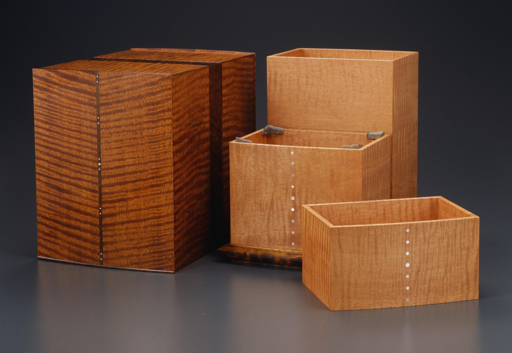
Sources 1
Reference Materials
- Material Science: Paulownia (Kiri) Technical Data - Focus on hygroscopic properties.
- Documentary: Making Beauty: Suda Kenji (British Museum) - National Treasure Overview.
- Technical Analysis: Words on Kigumi (Joinery) (Takenaka Museum) - Ash Box & Urushi focus.
- Philosophy: The World of Seiga (清雅) (Gunma Prefecture) - The core of Suda's "Pure Elegance."
- Lineage Data: Grandfather: Suda Sōgetsu (須田 桑月) - Historical Archive.
- Official Bio: Master Suda Kenji Biography - Japan Woodcraft Association.
Scale Reference: 7.2 x 9.5 x 40.0 cm (Stationery Box Proportions)
Sources 2
Historical Blueprint Archive
Source: Gallery A4: Woodworking - With Pure Elegance as a Guide (Page 7)
- Subject: Detailed Plans (詳寸図) by Kajita Megumu (梶田惠作).
- Origin: Collection of the University Art Museum, Tokyo University of the Arts.
- Significance: Represents the archetypal 1:1 scale drawings for Sashimono small cabinets and cigarette cases that influenced the Suda family's architectural design process.